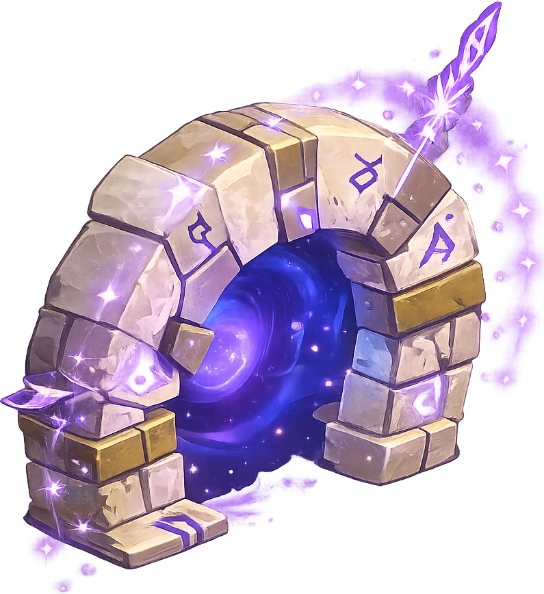

Sentence de la Balance
Vaincre 50 Bworks de Gisgoul sur leur territoire.
60050

Les missions disponibles sont separees de l'accueil pour comparer les objectifs et recompenses plus tranquillement.
Vaincre 50 Bworks de Gisgoul sur leur territoire.

Vaincre Ush Galesh dans son donjon avec votre équipe.

Terminer le palier 4 des songes et valider Les concepts brumeux.

Vaincre Servitude dans son donjon et rapporter la preuve.
